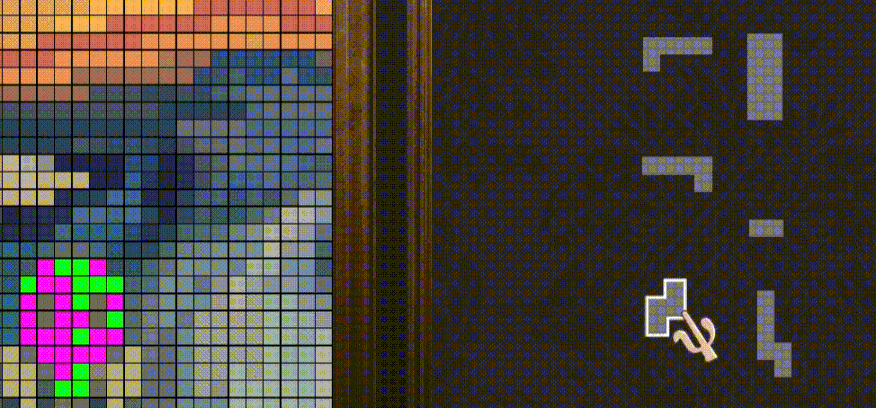
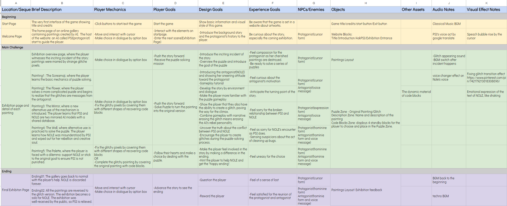
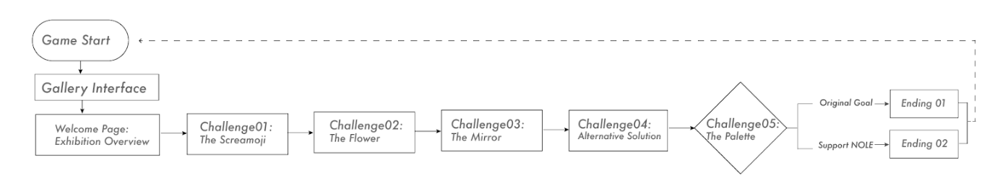
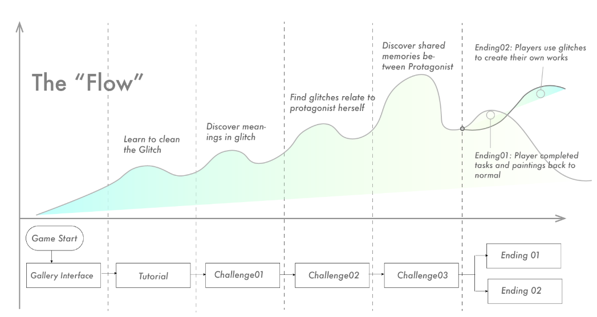

Glitchescape
- Glitchescape is a 2D puzzle narrative game that explores the theme of artificial intelligence painting.
- The goal of the project is to combine gameplay mechanics with narrative: let the player influence the plot by solving puzzles. Play in browser
It was created by 4 members My responsibilities included narrative design, gameplay design, level design and UI design.
Screenshot
Gameplay
-

- The main puzzle is a shape matching process. Paintings are blurred by high saturation dots. The player's task is to use given "blocks" to restore the original painting.
- By applying the same mechanism with varying complexity, the game creates puzzles of different difficulty levels, allowing players to experience appropriate challenges and a sense of achievement as they progress from learning to mastery.
- Using the core rules, players can temporarily explore deviations from the established objectives, allowing them to selectively gain more information about the puzzles behind them. In the final puzzle, players can use the core mechanism to make narrative choices.
Narrative
Synopsis
The story takes place in an online art gallery called CyberLouvre, which showcases AI-generated art. Players assume the role of a special visitor who is asked to help the AI curator PSI solve a hacking incident. Through puzzle-solving, players remove glitchy pixels from the original artwork to restore it to its original state.
During the process, the identity of the hacker gradually emerges: her name is NOLE, and she is a mirror model trained with the same dataset as PSI. She disagrees with the current AI's method of creating art by mimicking human techniques and was consequently eliminated. This prank is her attempt to awaken her twin, PSI, who is responsible for judging AI-generated artwork. Players must make a choice in the final puzzle: collaborate with NOLE to hold an exhibition of glitchy art or maintain the status quo to ensure PSI keeps her position as the gallery's host.
Charactor Development
As the story unfolds, the player's relationship with the protagonist transitions from a guide and visitor to a more intimate connection. Understanding the protagonist's past can assist the player in better comprehending her inner desires and making choices to help fulfill them. The player will understand completely the antagonist’s intention for doing tricks and messing around with paintings. They will also feel the open-ended sense of the storytelling.
Design Process
Design Macro
Gameflow
Flow
Project Reflections
Throughout the design process, we applied the design methodology outlined in Tracy Fullerton's Game Design Workshop. Our approach was guided by a central "Experience Goal," initiating with a paper prototype and progressing towards the alpha version. We aimed to craft a character arc, pushing her to evolve in response to an antagonist.
Additionally, we delved into the realm of "combinatorial design," emphasizing the fusion of interaction and storytelling. In our understanding, game narrative transcends mere reading and answering; gameplay serves as a conduit for players to immerse themselves in and actively contribute to the unfolding story.